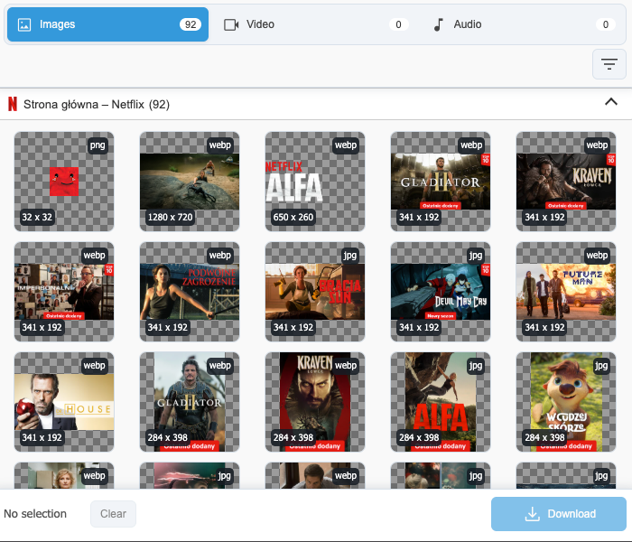
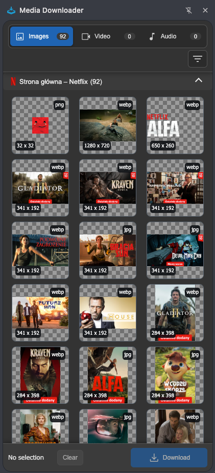
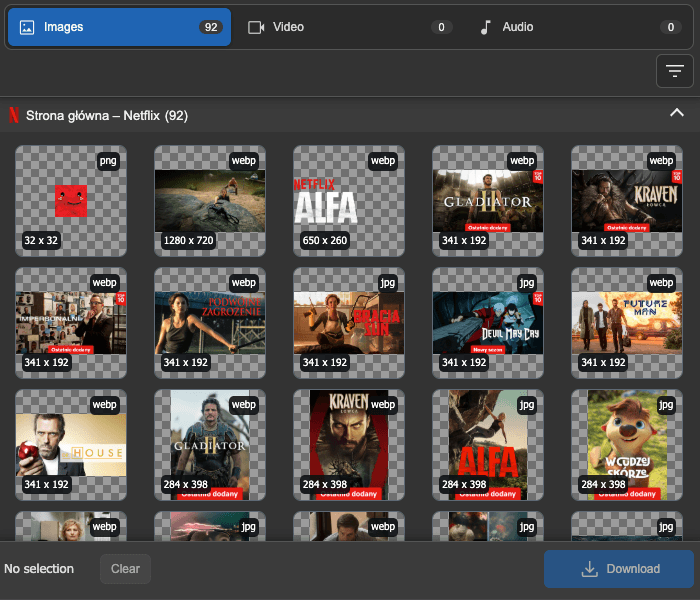
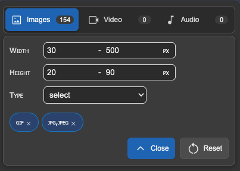
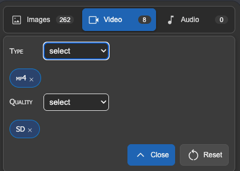
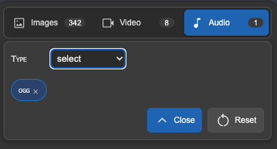
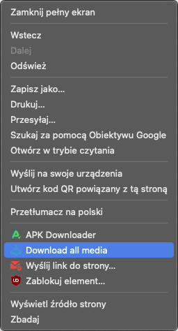
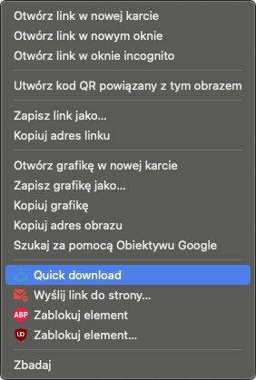

Filters without dead options
Format and quality lists are built from detected media, so you do not waste time on choices that return nothing.
Chrome extension for images, video, and audio
Browse media found on a page, filter by format, size, and quality, then download individual files or selected batches.
Everyday workflow
Format and quality lists are built from detected media, so you do not waste time on choices that return nothing.
Select multiple items across visited tabs and download them with one action from the bottom bar.
The accordion shows where each file came from, with a favicon, page title, and result count.
The interface follows your system preference or the theme selected in the extension settings.
Extension preview
The updated layout keeps media sections and filters at the top, results in the center, and the main download action always within reach.


Light and dark theme
Drag across the interface to see how the downloader adapts between a bright workspace and a darker browser setup.

Filters





Context menu
When you need a fast action, use the context menu to download all media from a page or quickly save a single image.